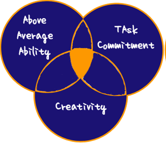
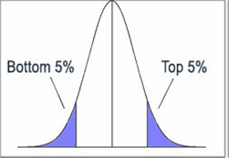

ACT Special Populations
Meeting the needs of Diverse Learners
Your classroom will be a cultural microcosm.
- You willhave students that perform on grade level, below grade leabovegrade level.
- You willhave students with learning disabilities, physical impairments, and emotionalbaggage.
- You willhave students that come from every socio-economic level.
- You mayhave students that are exposed daily to multiple languages.
- You willbe expected to demonstrate academic gains for each and every student in yourclassroom.
How do you reach them all?
You need to develop a bag of tricks and strategies to be
able to work with a diverse student population.
In this section, we will outline 3 populations of diverse learners that you will encounter as a classroom teacher:
- English Language Learners / Bilingual Education
- Gifted and Talented
- Dyslexia
Throughout institute, you will learn, practice, and observe many teaching strategies to promote student success. It is important to understand that many times, it takes multiple strategies to see the light bulb click on! Pay attention to all the tricks and techniques that you observe - you will need them all.
We also spend some time in this section outlining Differentiated Instruction - which simply put - is another technique that you can use to break down the curriculum to make it understandable to all students.
Keep in mind that the information that you learn in institute is not all encompassing - we scratch the surface, plant the seeds and give you basic tools to implement in your class to have success with your students. As a professional, you are expected to research and expand on your "tools" to increase student success.
English Language Learners / Bilingual Education
In 2007, the state approved Texas Essential Knowledge and Skills for addressing students that are English language learners (ELLS).
These proficiency standards are designed to assist students in social and academic language proficiency in English.
- In Activity 10, you will have the opportunity to review the English Language Proficiency standards.
- You will create a CIT to remind you of the variety of techniques that make content comprehensible for all students.
- Content Sheltered Instruction (the S.I.O.P model - Activity 7) is a great technique to make difficult texts easily comprehensible.
- Scaffolding in Activity 10 describes a method to facilitate instruction that builds on what students already know.
How are kids identified as English Language Learners / Bilingual?
Students who indicate a language other than English on their Home Language Survey are tested for speaking, reading, writing and listening proficiency, such as an IPT test, which determines their English proficiency level. A student is placed in the most appropriate class by a Language Proficiency Assessment Committee with parental approval.
If the student is in elementary school, he or she is placed in the bilingual program. There is no bilingual program in middle or high school in Texas, so the secondary student has English as a Second Language (ESL) one or two periods a day, and is in regular classes for the remainder of the day.
Bilingual classes are researched based and instruction is in the student's native language for the core subject areas of language arts, science, math, social studies and health with structured and sequenced mastery of English language development. This is considered the best practice in language learning because students can learn new concepts in their own language and transition that knowledge to English as language develops. Students build a broad educational background that successfully transfers to English when the student masters the new language.
ESL students are instructed in English. The secondary student has ESL one or two periods a day.Strategies and modifications are used to assist students with understanding the course work in all classes. ESL classes work best with older students that have some knowledge of the English language.
Middle School students typically take ESL in place of English Language Arts. They study the same curriculum as the English Language Arts classes, but are instructed by teachers trained to use strategies and modifications to help students learn English at the same time.
In high school, students begin to earn credits. Non- English speaking immigrant students may take English for Speakers of other Languages (ESOL) in place of English I and English 2. Students study literature, language and composition writing as well as learn how to speak English.
Each spring, all Limited English Proficient (LEP) students take the RPTE (Reading Proficiency Test in English). They will be rated either beginning, intermediate, advanced, or advanced high. Their listening, speaking, reading and writing skills are also assessed using the Observational Protocol, which is completed by the ESL or Language Arts teacher in the spring. No Child Left Behind requires that states measure not only LEP students' academic progress, but also English language acquisition.
TIPS for working with English Language Learners*:
In order to teach English Language Learners (ELLs), teachers need to understand the principles of teaching students from other cultures and also the strategies and methods to use to assure students' success. Here are 10 tips for working with English Language Learners.
1. Understand your own culture and cultural biases.Unconsciously, educators often say things and act based on their own cultural perspectives, which are often attributed to their family upbringing, religion, or education. Teachers assume everyone understands their words and actions the way they want them to be interpreted. Unfortunately, that is not the case. Words and gestures have different meanings and interpretations in different cultures. Once teachers understand their own culture and biases, they can begin to understand others.
2. Get to know your students' cultures. Through technology and the Internet, teachers now have the world literally at their fingertips. Read about the culture of the non-native English speakers and try to understand why they interact and behave the way they do.
3. Be aware of the levels of acculturation. ELLs pass through levels of acculturation as they adjust to the American way of life. Culture shock is a common stage, and teachers must understand that students may pass through a silent period or show anger, fatigue, or lack of motivation. Being patient and supportive are keys to helping students overcome culture shock.
4. Involve the parents. Provide an interpreter when possible. Keep the lines of communication open and invite parents to share their cultural heritage and participate in activities such as field trips and career days. Listen to parents' concerns regarding their children's education.
5. Prepare your classroom to be a multicultural community. Include books, pictures, bulletin boards, and other resources from the ELLs' home cultures. Encourage cooperative group work with clear ground rules for acceptance of all students.
6. Provide opportunities for ELLs to learn basic interpersonal communication skills. It takes at least two years for ELLs to learn English communication skills. Provide opportunities for students to work in flexible groups, work with partners, and socialize with peers. Encourage friendships between ELLs and English-speaking students.
7. Help ELLs acquire Cognitive Academic Language Proficiency (CALP). This is the language needed to understand and perform school tasks. CALP can take five or more years to develop. Teach vocabulary explicitly; use visual aids and realia; incorporate a variety of graphic organizers; use pre-, during, and post-reading strategies to aid with comprehension; and allow more time for ELLs to complete content area assignments and projects.
8. Incorporate the multiple intelligences that Howard Gardner describes. ELLs have many talents and abilities. Incorporating music, movement, art, opportunities for linguistic and mathematical development, and opportunities for interpersonal interaction and intrapersonal reflection can unleash those talents and support their learning processes.
9. Use appropriate assessments. Paper and pencil tests are not always appropriate assessments. Students often do not understand the words on the test or understand the format of taking such a test. Embed evaluations in instructional activities and scaffold assessments to provide support. Provide opportunities for authentic assessments such as portfolios, literature response journals, discussion groups, oral interviews, and role-playing or simulations. Provide rubrics so students are aware of the criteria for evaluation.
10 Have high but realistic expectations. Students will achieve what educators expect of them. Keep in mind that like all learners, ELLs can and will learn and develop at their own pace. Avoid stereotypes, embrace diversity, and celebrate the learning and progress that occurs.
* Adapted from www.pdkintl.org
Gifted and Talented
- In 1979, state funds for providing services to G/T children were made available, but providing such services was optional for school districts.
- In 1987, the Texas Legislature mandated that all school districts must identify and serve G/T students at all grade levels.
- In 1990, The Texas State Plan for the Education of Gifted/Talented Students was adopted.
- 1999, the Texas Performance Standards Project for Gifted/Talented Students (TPSP) was created.
Gifted and Talented programs are required in all public school districts. Information about program requirements can be found in the Texas State Plan for the Education of Gifted and Talented Students on the TEA website.
Texas Definition of Gifted and Talented:
"...gifted and talented students" means a child or youth who performs at or shows the potential for performing at a remarkably high level of accomplishment when compared to others of the same age, experience, or environment and who:
- Exhibit high performance capability in an intellectual,creative, or artistic area
- Possess an unusual capacity for leadership
- Excels in a specific academic field
3 THEORIES OF GIFTED AND TALENTED:
Gagné's Differentiated Model of Giftedness & Talent
Idea of HIDDEN Gifts!
High Potential = High Performance
Gardner's Theory of MULTIPLE Intelligences
The theory of multiple intelligences was proposed by Howard Gardner in 1983 as a model of intelligence that differentiates intelligence into various specific (primarily sensory) modalities, rather than seeing it as dominated by a single general ability.
Linguistic
Logical-Mathmatical
Musical
Spatial
Bodily-Kinesthetic
Interpersonal
Intrapersonal
Naturalist
Renzulli's 3 Ring Model of Gifted
Renzulli considers three factors important for the development of gifted behavior: above average ability, creativity, and task commitment. Gifted behavior occurs in certain people, at certain times, under certain circumstances.

So, what do we MEAN by the terms "Gifted", "Talented" or "Exceptionally Able"?
It's MORE than an IQ Score!
Top 5% Intellectual Ability is considered the Gifted Range

Gifted Kids come in ALL Shapes & Sizes,
from all socio-economic backgrounds,
and from ALL communities.
FORGET the Stereotypes, they are, above all else,
INDIVIDUALS!
How are kids identified for Gifted an Talented programs?
Each district is required to publish information on their Gifted an Talented identification programs - so take some time and play around on a school website to check it out!
Most districts go through a 3 step process: nomination, screening, and selection.
Nomination - Nominations may be obtained from any person familiar with the students abilities, potential, performance or school records.
Screening - Written permission from parents/ guardians is required and students will be screened using a variety of testing instruments that will give them an opportunity to demonstrate their diverse talents and abilities.
Selection - After the screening process is complete, a selection committee, made up of G/T coordinators, teachers, and administrators review all testing information. Students identified for G/T score around the upper 5% of the district population.Placement into G/T program is decided by the committee as they review the most effective way to meet the identified needs of the students.
7 CATEGORIES of Giftedness: Traits which are OBSERVABLE!
✔ General intellectual ability
✔ Specific academic aptitude
✔ Creative thinking and
production
✔ Leadership skills
✔ Visual, Performing arts,
Sports
✔ Mechanical Ingenuity
✔
Special
Abilities - Empathy, Understanding and Negotiation.
General CHARACTERISTICS
✔ Keen powers of OBSERVATION
✔ Learned to READ very early,
often before school age
✔ Reads WIDELY and rapidly
✔ Well developed VOCABULARY -
takes delight in using unusual and new words
✔ Has great intellectual
CURIOSITY
✔ Absorbs information rapidly -
often called SPONGES
✔ Very good MEMORY - can recall
information in different circumstances
✔ Have ability to CONCENTRATE
deeply for prolonged periods
✔ Unusual or quirky sense of
HUMOR
✔ Heightened SENSITIVITIES and
intensity
✔ Can develop strong passions -
become an EXPERT
Source: NCCA Draft Guidelines - Exceptionally Able Students
Not ALL Gifted Characteristics have to be present.
Giftedness can be MASKED by:
Learning Difficulties
Disabilities
Cultural Differences
Disadvantaged Background
Lack of Opportunities
TIPS for working with gifted and talented students:
"Vertical Enrichment" Activities
- Gifted and talented students may benefit from enrichment assignments or projects that go beyond material covered in the regular education classroom. This will offer variety and stimulation, while utilizing their higher level thinking and problem-solving skills. For example, accelerated readers often have read the books being covered in class. Therefore, instead of giving them "more of the same," give them the option of writing a story that parallels the classroom reading. Make sure the gifted students see these activities as rewards and not punishments for being intelligent.
Find a Mentor
- Gifted and talented students should not be limited to being peer tutors. Although "playing teacher" can be construed as a reward, you do not want to stifle your gifted child's creativity. Find your students mentors that will work with them in their areas of interest. Find mentors through parents, teachers and local organizations. By tapping outside expertise, you are encouraging your gifted students to reach their full potential. Examples of mentors include historians, museum guides, statisticians, artists and poets.
Incorporate Multiple Intelligence in Class
- Developed by Howard Gardner, a Harvard professor, the Theory of Multiple Intelligence is built on the assumption that individuals possess varying degrees of at least seven types of intelligence: linguistic (oral and written language), visual-spatial (recognition of patterns and space), musical (music patterns and composition), logical-mathematical (analyzing and deducing), body-kinesthetic (use of body to solve problems), interpersonal (understanding others) and intrapersonal (understanding self). Incorporating activities into the academic curriculum that involve these kinds of intelligence will ensure students are challenged. For example, during a reading lesson on Shakespeare, act out a play (kinesthetic), listen to music soundtracks (musical) and utilize a Venn Diagram to map out character feelings/motivations/intentions (interpersonal).
Use Bloom's Taxonomy
- Bloom's Taxonomy of Learning is a six-tier model of critical thinking, beginning at the most basic level and progressing to the most complex. The first two levels are remembering and understanding; however, gifted and talented students should focus on the upper three levels: analyzing, evaluating, and creating Analyzing involves comparing and contrasting, investigating, examining and classifying. This level is often utilized when writing reports, questionnaires or solutions to a mock crime scene. Evaluating involves ranking, judging and critiquing, such as in book reviews and current events debates Creating involves developing, composing and inventing. Tier 5 examples could include creating stories, games or poems. .
Read more: Ideas
for Teaching Gifted and Talented Kids | eHow.com
Dyslexia
What
is dyslexia?
Dyslexia is a specific learning disability that is
neurological in origin.It is characterized by difficulties with accurate
and/or fluent word recognition and by poor spelling and decoding abilities.These
difficulties typically result from a deficit in the phonological component of
language that is often unexpected in relation to other cognitive abilities and
the provision of effective classroom instruction. Secondary consequences may
include problems in reading comprehension and reduced reading experience that
can impede growth of vocabulary and background knowledge (International
Dyslexia Association, 2002).
The state of Texas defines dyslexia as a disorder of constitutional origin manifested by a difficulty in learning to read, write, or spell, despite conventional instruction, adequate intelligence, and socio-cultural opportunity.
Dyslexia affects individuals throughout their lives; however, its impact can change at different stages in a person's life.It is referred to as a learning disability because dyslexia can make it very difficult for a student to succeed academically in the typical instructional environment and in its more severe forms will qualify a student for special education, special accommodations or extra support services.
Texas school districts must have a program at all grade levels for students diagnosed as having characteristics of dyslexia or related disorders.The Texas Education Agency's Dyslexia Handbook: Procedures Concerning Dyslexia and Related Disorders contains the State Board of Education (SBOE) approved procedures concerning dyslexia and related disorders.
Symptoms: Common Signs of Dyslexia
Kindergarten - Third Grade
- Failure to understand that words are made up of parts and individual sounds
- Difficulty learning the letter names and their corresponding sounds
- Difficulty reading single words in isolation
- Uses context for word recognition
- Choppy and labored reading
- Difficulty spelling phonetically
Fourth Grade - High School
- History of reading and spelling difficulties
- Avoids reading aloud
- Reads slowly and labored, not fluent
- Avoids reading for pleasure
- Difficulty with spelling
How are kids with Dyslexia identified?
The Texas Education Code (State Law) states that students enrolling in public schools in this state are to be tested for dyslexia and related disorders in accordance with a program approved by the State Board of Education.It also states that the Board of Trustees of a school district must ensure that there is a procedure for identifying students with dyslexia or related disorders and a plan for providing them with the appropriate instructional services.
When a student is not making adequate progress in spite of best practices and numerous remedial strategies in the classroom, the student may be referred to the campus reading specialist or the person designated to perform dyslexia screening.
A student may be referred for dyslexia screening by parents, guardians, counselors, teachers or anyone knowledgeable about the student's academic development.
Instruction:
School districts my purchase a reading program or develop their own dyslexia reading program for students with dyslexia and related disorders as long as it contains the descriptors found in The Dyslexia Handbook, which can be downloaded on the TEA website.
TIPS for working with students with Dyslexia
Effective
teachers of dyslexics keep several guiding principles in mind. A student with
dyslexia
- can be a positive, contributing, and valued class member
- is an intelligent person who does not learn in the same way as others
- learns by doing
- often has trouble remembering
Effective
teaching strategies and adaptations can help dyslexic students be more
successful. Consider how you might use the following ideas to help dyslexics
build the skills they need to overcome the disability. Your initial goal should
be to reduce the overall reading, writing, and spelling load, while increasing
the self-confidence of the student.
Provide a daily outline of schedules, goals, and lecture notes.
- Use a sans serif font (such as Arial or Verdana) to reduce clutter on visual aids.
- Print on colored paper to reduce glare.
- Boldface key words.
- Show the whole picture first.
- Break information into small, sequential steps.
Conscientiously construct the classroom environment for success.
- Be welcoming and encouraging.
- Provide a seat in the front.
- Support interactions with a peer-helper.
- Nurture student's growth and learning.
Utilize helpful technology for additional support.
- Tape record lectures with a cassette recorder.
- Video tape lessons and demonstrations.
- Use audio-taped versions of textbooks.
- Make interactive, multimedia learning opportunities available.
Present multi-sensory lessons to maximize learning.
- Start each lesson with a review of prior learning.
- Utilize demonstrations, observations, and experimentations.
- Expand lessons beyond visual and auditory learning.
- Incorporate kinetic or sensory learning experiences.
- Provide hands-on learning activities.
Evaluate homework procedures to lessen the literacy load.
- Write assignments in the same place daily or provide a written handout.
- Limit the amount to what is absolutely necessary for practice.
- Give credit for effort and achievement.
Consider altering evaluation and testing procedures to reduce stress.
- Offer multiple-choice tests rather than short answer and essay tests.
- Read directions orally.
- Allow extra work time and rest breaks.
- Accept verbal responses, as well as written.
Recognize all victories and accomplishments to help raise self-esteem.
- Help students to see their strengths.
- Provide opportunities to increase confidence.
- Do not tell students that they are not trying hard enough.
Be responsive to your dyslexic student's needs.
- Seek teaching methods best suited to the needs of the student.
- Play learning games.
- Teach students to use logic, rather than relying on memory.
- Be flexible!
Be Part of the Solution for a Dyslexic Student
Teaching
a student with dyslexia is sometimes a challenge for teachers, but it is also
an opportunity to make a difference in a struggling student's life. There are
several options for support, in addition to the adaptations you can make in the
classroom. Don't hesitate to refer to the special education professional in
your school for additional references and support.
Dyslexic students deserve your attention to help them be as successful as
possible. You can be a part of the solution in educating dyslexic students and
helping them to achieve the educational goals of becoming independent and
life-long learners.
Differentiated Instruction
Differentiated instruction is a teaching approach in which teachers adapt their instruction to student differences. Rather than developing a curriculum aimed at the "common student," teachers modify their instruction to meeting individual student's readiness levels, preferences, and interests. Differentiated instruction recognizes the fact that we have a diverse student population and enables educators to teach students of varying abilities in one class.
Carol Tomlinson, professor at the University of Virginia, identifies four classroom elements that can be differentiated:
- Content: What the student needs to learn. The instructional concepts should be broad based, and all students should be given access to the same core content. However, the content's complexity should be adapted to students' learner profiles. Teachers can vary the presentation of content,( i.e., textbooks, lecture, demonstrations, taped texts) to best meet students' needs.
- Process: Activities in which the student engages to make sense of or master the content. Examples of differentiating process activities include scaffolding, flexible grouping, interest centers, manipulatives, varying the length of time for a student to master content, and encouraging an advanced learner to pursue a topic in greater depth.
- Products: The culminating projects that ask students to apply and extend what they have learned. Products should provide students with different ways to demonstrate their knowledge as well as various levels of difficulty, group or individual work, and various means of scoring.
- Learning Environment: The way the classroom works and feels. The differentiated classroom should include areas in which students can work quietly as well as collaborate with others, materials that reflect diverse cultures, and routines that allow students to get help when the teacher isn't available (Tomlinson, 1995, 1999; Winebrenner, 1992, 1996).
Guidelines and Strategies for Differentiated Learning
Link assessment to instruction. Assessment should be ongoing. With the data gleaned from assessment, teachers learn where students need additional instruction as well as determine direction for future instruction.
Implement flexible grouping. Teachers use whole-class, small-group, and individual instruction. Students can, and should, be grouped in a variety of ways based on readiness, interest, learning profiles, and randomly. Teachers can assign work groups, and sometimes students select their own work groups. The groups should change often.
Use a range of instructional strategies. In addition to planning instructional activities to meet student's learning readiness, all activities should be equally interesting and equally focused on essential understandings and skills. To make learning student-centered, the teacher should employ a wide variety of instructional strategies such as tiered activities, hands-on activities, text, scaffolding, and projects. Often students are provided with options in the instructional activities they engage in as well as in the final assessment tool.
During the Special Education component, you will work with a grid that outlines 9 different types of modification and accommodations.These are also techniques that can be used in the classroom to differentiate the curriculum so that all students can have success!